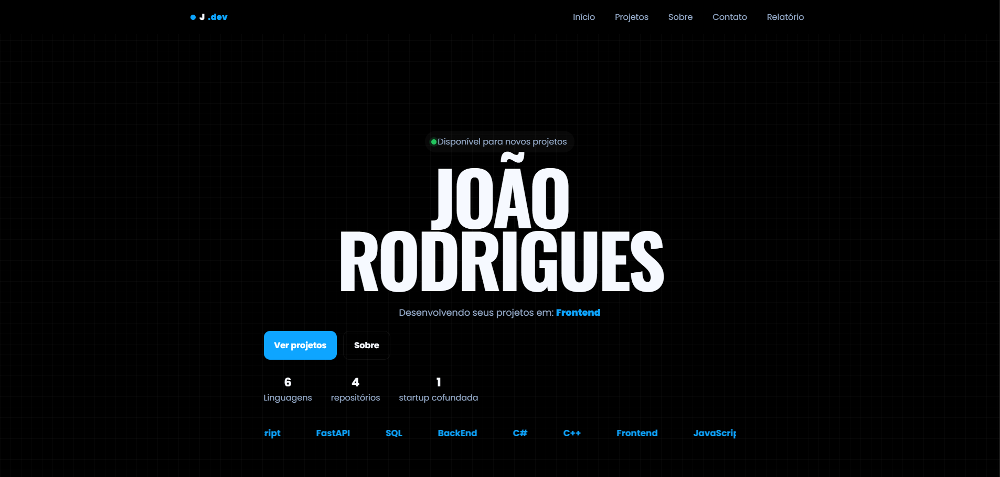
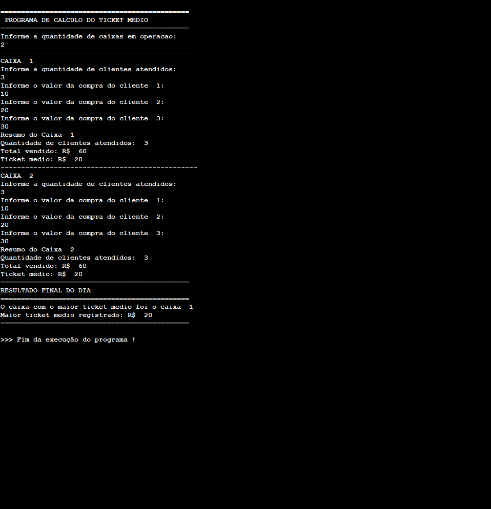
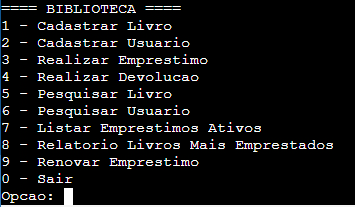

Projetos
Meus 3 projetos que considero os principais

Meu Portfólio
Meu primeiro projeto profissional, um portfólio completo para exibir meu trabalho e habilidades, usando HTML, CSS e JavaScript com validação de formulário.

Projeto Ticket Médio
Projeto desenvolvido para uma empresa Ticket Médio, focado em facilitar o processo de solicitação de tickets medio de varios caixas.

Sistema para Biblioteca
Projeto desenvolvido para otimizar a gestão de livros e recursos em uma biblioteca, focado em melhorar a experiência do usuário e aumentar a eficiência operacional.